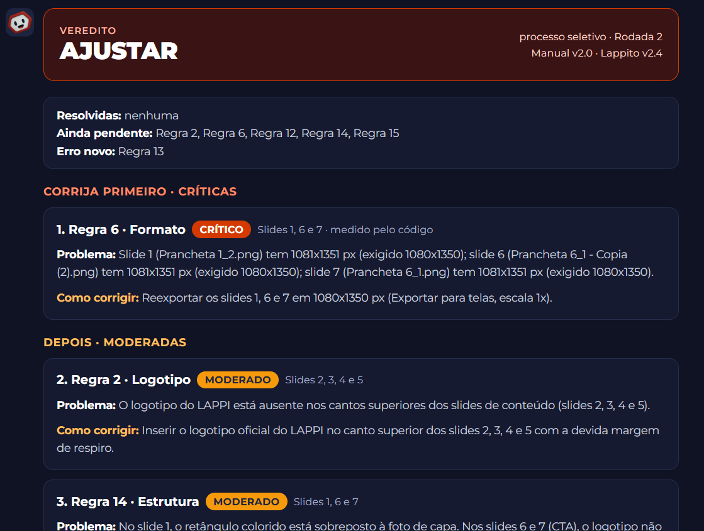

Projeto 1 · LAPPI/UFC
Sistema de auditoria de identidade visual com IA
PapelIdealização e desenvolvimento, individual
PeríodoJunho a novembro de 2026
SituaçãoEm implantação; uso previsto para março de 2027
Problema
O laboratório segue muitas regras de identidade visual, e o rigor da fiscalização das publicações variava conforme a coordenação. A cada troca de coordenador, o padrão podia cair, e a aprovação dependia de uma única pessoa.
Solução
Aplicativo de Windows, conhecido internamente como Lappito, que audita os carrosséis do Instagram contra as 15 regras do manual de postagem antes da publicação. O sistema cuida apenas do que é regra objetiva, como formato, cores, estrutura e ortografia; o processo criativo permanece com a equipe.
Decisões técnicas
- O que pode ser medido é medido por código, e esse resultado prevalece sobre o da IA; cores são comparadas no espaço Lab (ΔE).
- O veredito é calculado pelo código, a partir de respostas da IA em formato estruturado e validado.
- Reauditoria por rodadas: a partir da segunda, o sistema confere apenas o que falhou e o que a correção pode ter afetado.
- Relatório de correção orientada, com erros críticos primeiro e a indicação de como corrigir cada um.
- Regras em arquivo de configuração, modelo de IA reserva e 70 testes automatizados.
Fluxo de uma auditoria
1. Slides do post
Imagens do carrossel, em ordem
Imagens do carrossel, em ordem
2. Medição por código
Tamanho, cor, nº de slides, fundos
Tamanho, cor, nº de slides, fundos
3. Avaliação por IA
Logotipo, contraste, estrutura, ortografia
Logotipo, contraste, estrutura, ortografia
4. Veredito e relatório
Aprovado ou ajustar, com o que corrigir
Aprovado ou ajustar, com o que corrigir
Teste com post real: no carrossel do Processo Seletivo, o sistema reprovou o formato dos seis slides por medição exata e apontou seis erros de ortografia, cada um com a correção indicada.
Python · Google Gemini API · Pillow · Pydantic · pywebview · unittest

